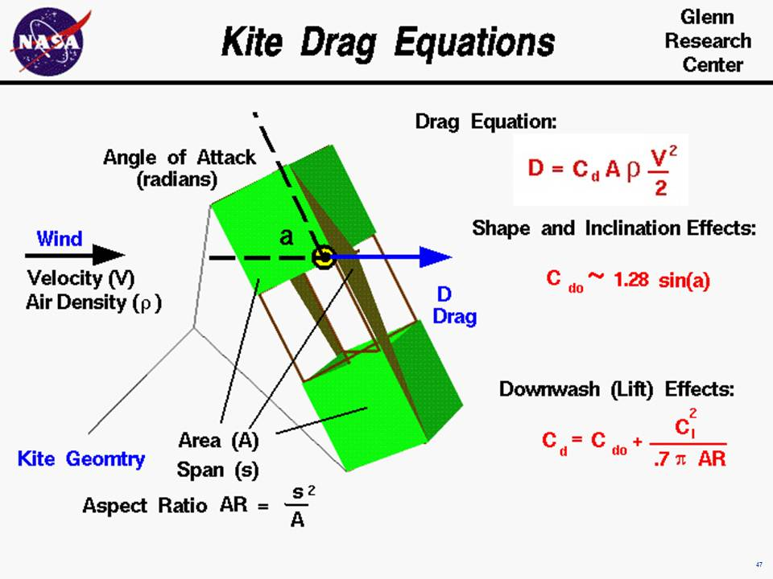

|

An excellent way for students to gain a feel for
aerodynamic forces
is to fly a
kite.
Kites
fly
because of forces acting on the
parts
of the kite.
Though kites come in many
shapes and sizes, the
forces which act on the kite are
the same for all kites.
You can compare these forces to the
forces that act on an airliner in
flight and you will find that, with the exception of thrust,
they are exactly the same.
The similarity in forces allowed the
Wright brothers
to test their theories of flight by flying their
aircraft
as
kites from 1900 to 1902.
On this slide we show the equations which would describe the
drag of a flying kite. The graphic shows a side view of the
flying kite with the aerodynamic drag
shown by the blue
vector.
The wind is blowing parallel to the ground
and the drag is
aligned with the wind.
Since the forces on a kite are the same as the forces on an airplane,
we can use the mathematical equations developed to predict airplane
performance to predict the aerodynamic performance of a kite.
In particular, the
drag equation shown on the upper right side of the
has been developed for aircraft.
The drag D is equal to a drag coefficient Cd times the
projected surface area A times the air density r times one
half the square of the wind velocity V.
D = Cd * A * r * .5 * V^2
The drag depends on two properties of the air; the density and velocity.
In general,
the density depends on your location on the earth. The higher the elevation,
the lower the density.
The standard
value for air density r at sea level conditions is given as:
r = 1.229 kg/m^3 or .00237 slug/ft^3.
The variation of air density with altitude is described on a separate
page.
The air velocity is the
relative
speed between the kite and the air. When the kite is held fixed
by the control line, the air velocity is the wind speed.
If the line breaks, or if you let out line, the velocity is
something less than the wind speed; if you pull on the control line the
velocity is the wind speed plus the speed of your pull.
The drag changes with the
square of the velocity.
The aerodynamic drag on your kite depends directly on the surface
area of the kite.
You first learn how to compute the
area
for a geometric shape while you
are in middle school. The surface area depends on the particular
design of your kite.
The drag depends on the
drag coefficient, Cd,
which depends on geometric
properties of the kite and the angle between the kite surfaces and the wind.
Drag coefficients are usually determined experimentally for aircraft,
but the aerodynamic surfaces for most kites are simple, thin, flat
plates. So we can use some experimental values of the drag
coefficients for flat plates to get a first order idea of our kite performance.
For a thin flat plate at a low
angle of attack ,
the drag coefficient Cdo is equal to 1.28 times
times the trigonometric sine,
sin,
of the angle a:
Cdo = 1.28 * sin(a)
We use Cdo for the drag coefficient because there is another aerodynamic effect present
on most kites. If we think of a
kite as an aircraft wing, and use the
terminology associated with aircraft wings,
most kites have a low wing span (length from side to side)
relative to the surface area.
Most kites therefore have a low aspect ratio AR
which is defined to be span s squared divided by the area A.
AR = s^2 / A
Near the tips of a wing the flow spills from the underside to the topside
because of the difference in pressure. This creates a
downwash
which changes the effective angle of attack of the flow over
a portion of the wing. For low aspect ratio wings, the portion of the wing
affected by the downwash is greater than for high aspect ratio wings.
Since most kites have a low aspect ratio AR,
we have to include the effect of the
downwash on the drag coefficient.
This effect is called the "drag due to lift" or the induced drag of the
wing.
The equation for induced drag is given at the bottom right of the slide:
Cd = Cdo + Cl^2 / (.7 * pi * AR) )
where Cl is the
lift coefficient,
the .7 is an efficiency factor for rectangular wing shapes, and pi is 3.14159.
With these equations you can make a first prediction of the drag of your
kite. You can use the
KiteModeler program to further study how kites work
and to design your own kites.
Activities:
Guided Tours
-
Forces on a Kite
-
KiteModeler
Navigation ..


- Beginner's Guide Home Page
|